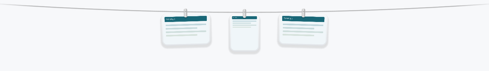
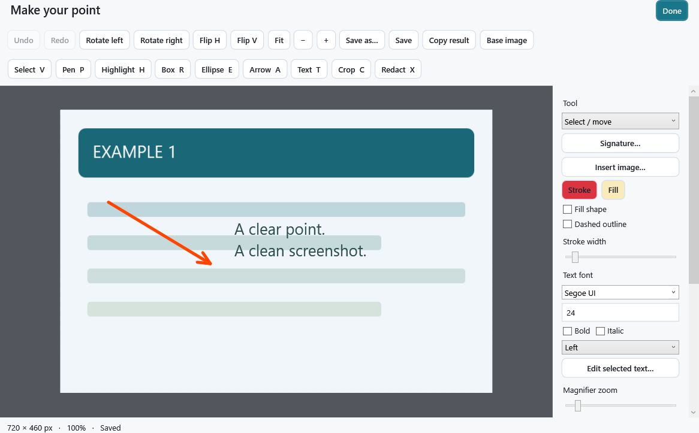

A little line.
Everything within reach.
Capture, annotate, and keep screenshots close. Pegline hangs your images on a floating clothesline, with a native Windows editor and searchable local library.
0.2.1-beta.1 · Portable ZIP · Windows 11 x64 + .NET Framework 4.8/4.8.1 · Unsigned

Actual WPF renderer output with synthetic images.
Make your point.
Keep your flow.
Region, window, monitor and freehand capture. Draw arrows, add text, crop, redact, undo, then save or copy the edited image.
A separate library keeps up to 200 recent file references. Forgetting an entry leaves its image file alone.

Download it. Or build it yourself.
Run the portable release
- Download and extract the ZIP.
- Keep
Pegline.exe.configbesidePegline.exe. - Run
Pegline.exe. Find controls in the system tray.
Compile and test from source
git clone https://github.com/meanin2/pegline.git
cd pegline
Verify-Windows.cmdUses the local Windows compiler. No package restore or bootstrap downloads. CI logs, portable ZIP and verification images are available in successful GitHub Actions runs.
Useful beta. Honest evidence.
Compiled on Windows. Regression tests, WPF rendering and native shelf window lifecycle checks pass. Full desktop interaction acceptance is still pending: clipboard destinations, Shell dragging, capture selection, mixed-DPI monitors and virtual desktops.
Six shortcuts to start.
Ctrl+Alt+4 — Region capture
Ctrl+Alt+3 — Monitor capture
Ctrl+Alt+5 — Capture chooser
Ctrl+Alt+T — Show or hide shelf
Ctrl+Alt+R — Repeat last region
Ctrl+Alt+L — Screenshot library